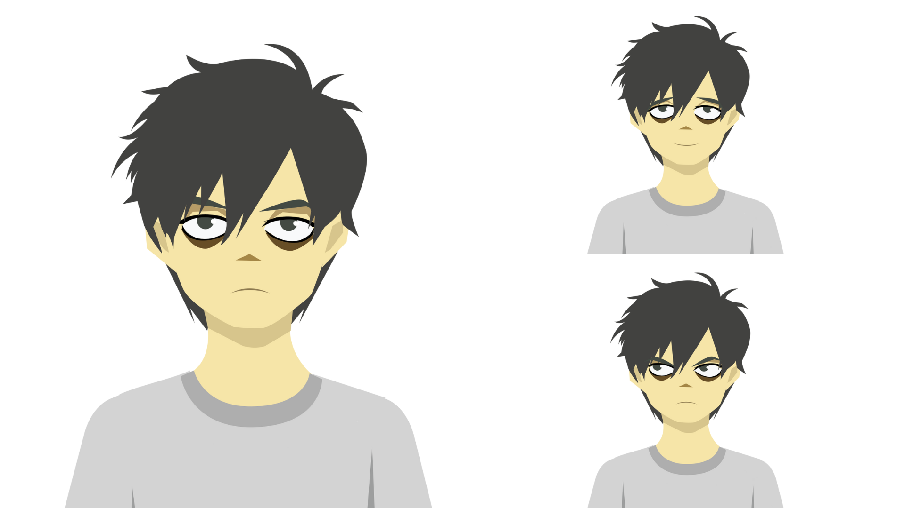

Unsaved: A Motion Graphic Assingment
Project Summary
“Unsaved” is a motion graphic animation that follows the journey of our silent protagonist as he pulls an all-nighter working on an important project. As the night toils away and the coffee cups begin to stack up, the hours of typing finally catch up to him as he collapse from exhaustion on his desk. Unfortunately for him, the impact knocks over one of his cups and spills all over his computer. The computer then glitches and shuts down, leaving all his previous work unsaved.
- Skills: Adobe Illustrator, After Effects, Photoshop
- Date: April 15th, 2022
Conception
This project was a homework assignment for my motion graphics course that was meant to be completed in under two weeks and feature at least one character puppet, alongside ten other moving parts. Given the tight deadline for this project alongside my other midterms, I was feeling incredibly overwhelmed and overworked as I pulled many all nighters to finish my assignments.
One time while studying in the cafeteria, I accidentally tipped over my water bottle and wet my entire laptop. The unfortunate incident would then inspire this short animation!
I figured that the keyboard, eyes, and fingers would be a good way to reach the ten moving pieces goal. Making the computer be the focus of our POV would allow for a more interesting composition and give us a good look at the protagonist and his room.
Character Model
On our main character model, I drew each facial feature such as eyebrows, pupils, eyelids etc on separate layers to be able to emote various expressions with small adjustments. While my initial plan of rigging the model using DUIK was scrapped due to time constraints, the model was still prepped for the process, allowing me to edit their positions in After Effects.

Our character also cycles between three main positions. Our default puppet is shown on the left and when sitting in a chair, is positioned to have his arms on the table. Then, when he collapses, his head falls down and his arms are more spread out.
Moving Assets
Some additional assets created that move include the train, the keyboard, the coffee cup, and the hands. The train is shown moving across the window to signify the passage of time, the coffee cup spills over the table, and the keyboard keys press down with the fingers. Each finger is on a separate layer as well in order to animate the typing action.
Background
Given the tight time constraints, a common theme in all of my models is trying to use simple shapes to push out its appeareance. The background room was no different. I used shapes such as squares and circles to carve out the general layout of the room, with the border of it featuring the frame of the computer. This is meant to give the illusion that our prespective is that of the monitor screen.
Reflection
This project was really fun to work on and taught me alot about creating puppets in Illustrator and moving them around in After Effects. If given more time, I would love to continue experimenting with this and actually setting up the puppet using DUIK to really add more motion to the piece. Even so, it was an incredibly rewarding exercise during my motion graphics course!